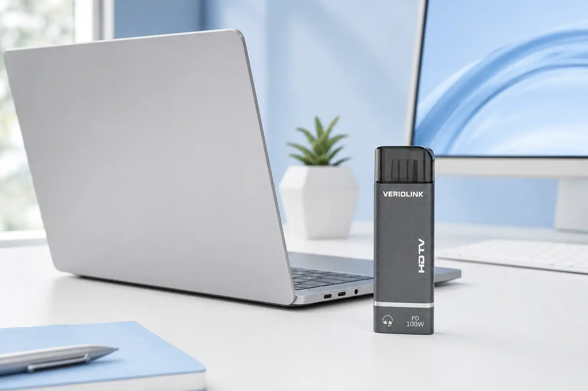
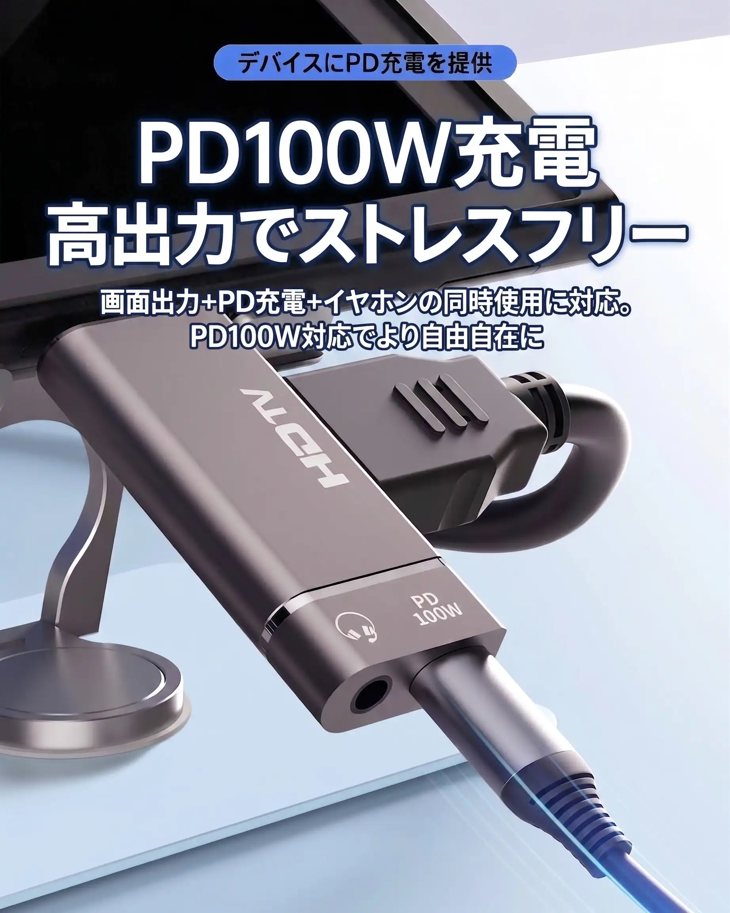
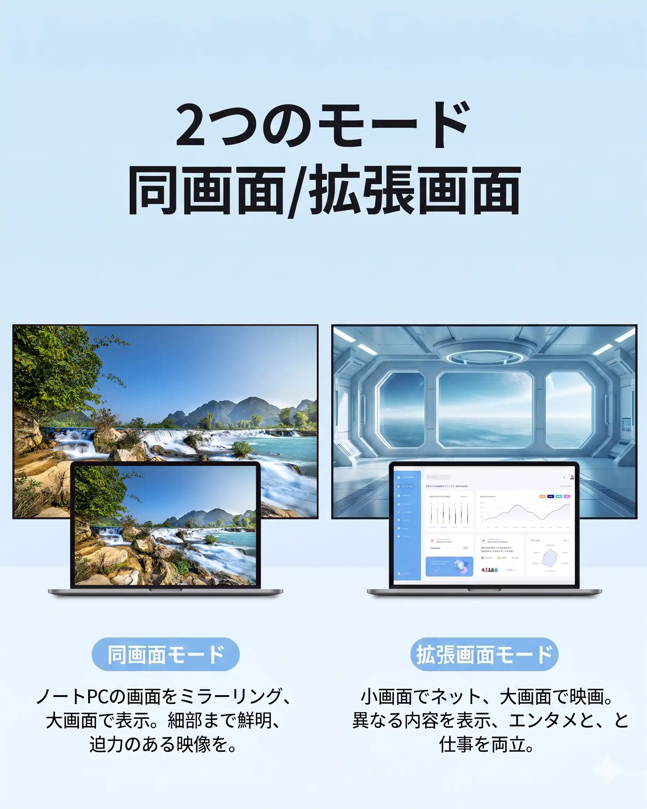
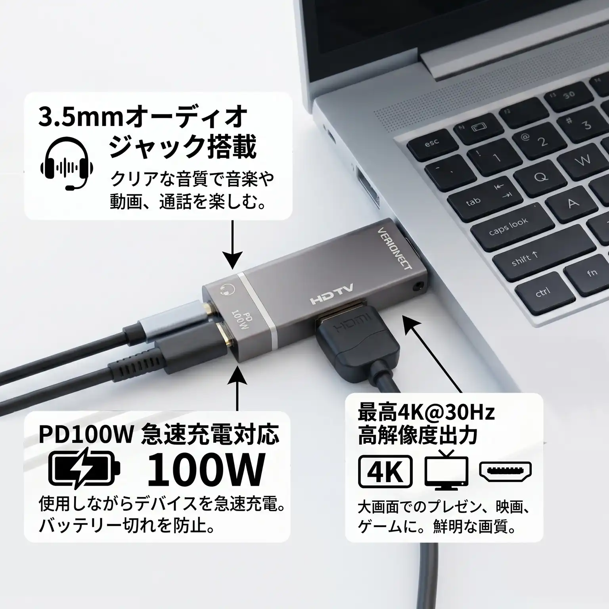

Sharp by default
Supports up to 4K at 30Hz for detailed, fluid output on compatible displays.
Video & display
A compact bridge from HDMI source to USB-C display. LinkCore 01 keeps your image steady, your desk clear and your setup ready for 4K.
Built for the picture
From a presentation room to a second screen at home, LinkCore 01 makes the connection feel uncomplicated.
Supports up to 4K at 30Hz for detailed, fluid output on compatible displays.
The low-profile aluminium body stays tidy beside a laptop, dock or monitor.
Shielded construction helps keep the picture stable through everyday movement.
Plug in, select your display and get to work without a driver installation.
See it in use
The supplied product images show a compact aluminium bridge for desks, meeting rooms, entertainment setups and dual-screen work.





Field notes
Designed for modern workstations, meeting rooms, entertainment setups and everyday display upgrades.
| Video input | HDMI |
|---|---|
| Display output | USB-C display connection, up to 4K / 30Hz |
| Power delivery | PD pass-through up to 100W |
| Audio | 3.5mm audio jack support |
| Modes | Mirror and extended display modes |
| Setup | Plug and play, no driver installation shown |
Send us your device model and we will help you confirm the right connection.